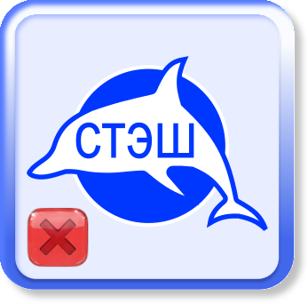
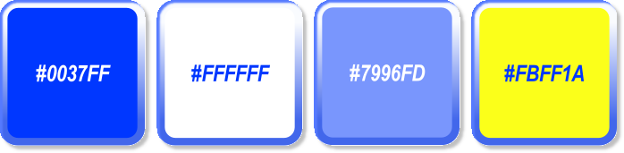
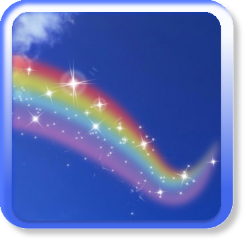

стайлгайд стэша
о проекте
архив старого интернета. место, в котором собраны артефакты прошлого: сайты, культовые моменты, интерфейсы, игры, гифки, мемы и многое другое. мы собираем фрагменты прошлого и создаем из них портал в мир забытого интернета, чтобы вспомнить, какой была сеть до фильтров, алгоритмов и перенасыщения контентом, и чтобы немного заглянуть туда, куда уже не заходят.

нейминг
название «стэш» исходит от английского слова «stash», что отражает идею хранения и накопления цифровых находок — это место, где собираются фрагменты старого интернета, воспоминания и визуальные артефакты эпохи. само слово ассоциируется с личным тайником, чем-то спрятанным, что хочется сохранить и пересматривать.
логотип
логотип в виде дельфина выбран неслучайно, поскольку дельфины часто появлялись в визуальной культуре старого интернета и стали её неформальным символом. они олицетворяют дружелюбие, игру и связь между природой и технологиями, что было характерно для оптимистичного цифрового мышления 2000-х.

как нельзя использовать логотип
логотип не должен располагаться на фоне, который будет сливаться с основными цветами логотипа. также можно использовать только 3D версию логотипа, и запрещено изменять его форму, положение и цвет




типографика
для медиа используется универсальный гротеск Arial Narrow в трех разных начертаниях, сочетающий в себе универсальный и лаконичный стиль, а также своеобразную резкость.

цвета

графика
в проекте визуальный код намеренно отходит от привычных стандартов современного веба и обращается к визуальному языку старых сайтов, созданных в эпоху, когда ещё не существовало строгих правил и универсальных шаблонов.

элементы компьютерного стола
дизайн сайта выполнен в стиле рабочего стола на компьютере. важную роль играют элементы, вдохновлённые олд вебом: иконки, окна, кнопки и визуальные отсылки к старым операционным системам windows.
иконки

плашки и окна

low-poly элементы
обязательными элементами на станицах сайта, являются low-poly персонажи, которые были созданы с помощью 3D программы. герои наполняют сайт своей яркостью и забавностью.

фото
фоновые изображения выполняют роль заставки обоев, как на рабочем столе, и используются без обработки для поддержания атмосферы старого веба.



мерч
кружка

ремень

тамагочи

ланчбокс